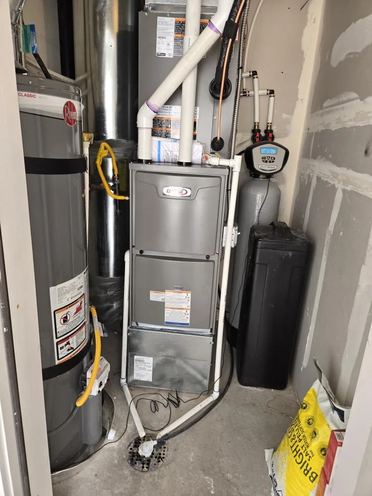

Heating Maintenance & Tune-Ups in West Valley, UT
Heating maintenance in West Valley keeps small issues from turning into January breakdowns. Annual maintenance can help keep a furnace operating safely and efficiently while giving a technician an opportunity to catch developing problems.
What’s Included in a Furnace Tune-Up
Our tune-ups cover a full inspection of your system’s key components, including checking the heat exchanger for cracks, testing ignition and burner operation, inspecting electrical connections, measuring airflow, and replacing or cleaning the filter if needed.
Why Fall Maintenance Matters Before Winter Hits
Fall is the best time to schedule maintenance before overnight lows along the Wasatch Front begin to drop. Waiting until the first cold snap means booking right when emergency no-heat calls start piling up.
